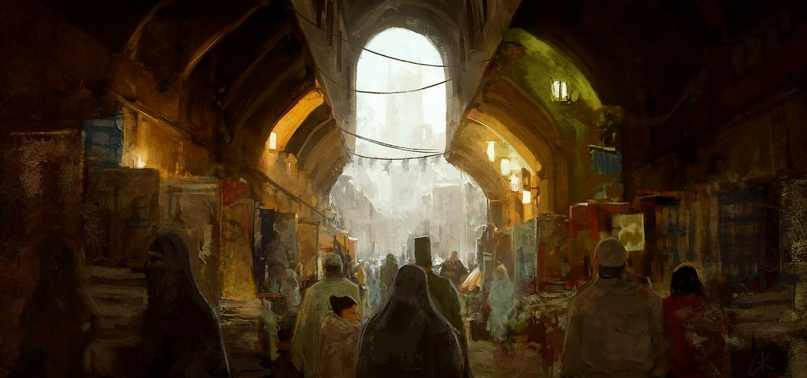

Города Поэдрума
Города Поэдрума
Северные джунгли, каменное плато, южные пески
images/karta.jpgРекомендуемый размер:
1200 × 900 px (4:3)

Составлена по рассказам вольных капитанов и хранителей Ордена. Там, где линии расходятся с песком, — верьте песку.
Хейнор
Столица Поэдрума, где сейчас располагается Орден. Делится на 3 квартала — центральный, речной и внешний. В центральном находится великолепный главный храм Демеса и живут члены Ордена — в основном высокопоставленные. Тут же находятся все административные здания. Через речной квартал, опоясывающий центральный, протекает канал; там живут менее значимые члены Ордена, находятся множество лавок, магазинов и тому подобного. В последнем, внешнем районе проживают все остальные жители города. Стены хорошо укреплены и защищены. Тут же самая большая на Поэдруме библиотека. Фактически именно отсюда и контролируется вся деятельность Ордена. Сельского хозяйства тут нет, хотя есть рыбаки. Так же тут расквартировано самое большое после Анхеля количество солдат.
Элрун
Портовый город. Имеет неплохие каменные стены, однако на порядок хуже, чем в столице. Тут нет никакого хозяйства — как и в Хейноре, имеются пара рыбаков. Тем не менее тут есть множество магических академий, где обучают стихийной, нейтральной и пси-магии. Тут же обучают и прикладным наукам, и боевым искусствам — знаменитые технические и магические лаборатории находятся именно здесь. Самый настоящий наукоград Поэдрума.
Анхель
Портово-военный город. Окружён массивной стеной. Здесь в довольно хороших условиях расквартирована армия Поэдрума, отдельная от Ордена. В случае необходимости направляется в другие части острова, но в основном её стараются разместить здесь. Так же тут занимаются кораблестроением, именно тут зарождается боевой флот. Никаким хозяйством тут не занимаются, однако тут так же живут и семьи солдат.
Хэреда
Сельскохозяйственный центр Поэдрума. Стен никаких не имеет, кроме небольшого частокола и непроходимых джунглей. Практически все местные жители — либо охотники, либо крестьяне. Ну и разумеется, тут имеется стража, но её присутствие во многом номинально. Жители Хэреды обеспечивают весь Поэдрум растительной пищей — и, надо сказать, хватает с головой. Орден активно способствует развитию сельского хозяйства, и пока результаты впечатляют.
Орзума
Среднее рыбацкое поселение. Окружено небольшим частоколом. Имеет отличный порт, через который идёт большая часть товаров, приходящая на остров. Из-за этого стражи в деревне довольно много для её габаритов. Относительно недавно пристань была выложена из камня, хотя большая часть домов всё ещё представляет деревянные хижины — впрочем, стройки там идут довольно активно. Дороги около поселения очень хорошо развиты.
Тироль
Большой промышленный город. Хорошо укреплён. Сюда везут все металлы, полученные с торговли, здесь же обрабатывают золото для будущей продажи. Экспорт полностью покрывает все нужды острова в металле — оружие и броня поэдрумских мастеров, хотя и не является лучшей в мире, довольно хороша. Так же в Тироле находятся и менее крупные технические лаборатории, где более решают практические задачи, чем изучают теоретические вопросы, как то делают коллеги из Элруна.
Удача
Город-солянка. Играет роль центрального торгового пункта. Имеет неплохие стены. Как таковой торговли на Поэдруме нет — однако транспортная сеть хорошо развита, и именно в Удачу ведут все основные дороги. Только через неё возможно из южных городов (Дарамир, Элрун, Хейнор) попасть в северные (Хэреда, Орзума, Тироль). Так же тут немало горняков — местная каменистая основа особенно богата золотом, и именно тут сконцентрирована большая часть золотоносных рудников и копей. Отсюда, по легенде, и название.
Дарамир
Разрушенный ещё в древние времена город. По слухам — из-за сильнейшего шторма, которым маги воды хотели уничтожить Огненную Башню в самом центре поселения. Впрочем, башня выстояла, чего нельзя сказать о городе. Орден довольно скептично пока смотрит на перспективу восстановления города, хотя Огненная Башня продолжает существовать и функционировать — теперь, правда, уже под бдительным контролем Ордена Воли.
Золотые Поля
Крупнейший центр золотодобычи и вообще разработки относительно скудных земель Поэдрума. Тут же золотую руду переплавляют в чистое золото — хорошо известное своим качеством и за пределами острова. Однако большая часть непосредственно изделий из него производится в других местах — например, в том же Тироле.
Шакэр
Важный военный и перевалочный город. Если в Анхеле обычно занимаются расселением солдат и хранением, то Шакэр является крупнейшим тренировочным центром, где обучают искусству владения оружием; магии тут не обучают. Окружён отличной стеной и хорошо укомплектован резервными припасами. Кстати говоря, именно тут находится крупнейший склад вооружения на всём острове.
Такшир
Второй по значимости сельскохозяйственный узел страны, находится недалеко от основного — Хэреды. Имеет весьма древнюю историю и очень древние здания, архитектура которых отсылает к давно забытым временам. По слухам, где-то в этом районе всё ещё сильны различные течения язычества и шаманизма, поэтому это поселение находится под особенно тщательным надзором Ордена.
Урзулф
Центральный административный город, после столицы. Неформально являет собой резиденцию Ордена, поскольку большая часть жителей — так или иначе его члены. Располагается большое количество тренировочных центров, в которых послушники занимаются тренировками.
Тохибр
Центр лёгкой промышленности Поэдрума. Тут проживает множество кожевников, ткачей; производятся множество бытовых товаров — от скрепок до бумаги. Тут же происходит большая часть процессов, связанных со снабжением — очень сложная бюрократическая система требует большого количества человеческих усилий и весьма сложных вычислений.
Фахим
Довольно молодой город, в котором тем не менее сосредоточено огромное количество научных библиотек. Практически все, сдавшие Путь Разума, проходили обучение именно тут, поскольку общее научное образование тут дают очень выдающееся, даже по рамкам других государств. Тесно связан с Элруном, хотя у последнего упор именно в магические исследования.
Жассэра
Рыбацкий город, имеет каменную пристань, однако в ужасном состоянии. Иногда используется как резервный порт, однако общее состояние оставляет желать лучшего — в основном единственные местные дома это полупокосившиеся лачуги рыбаков, ведущих сносное, но весьма жалкое существование.

География Мериона · Поэдрум · Города